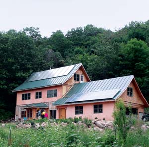
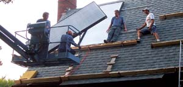
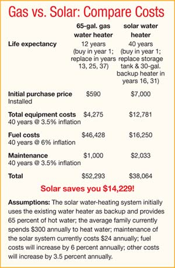
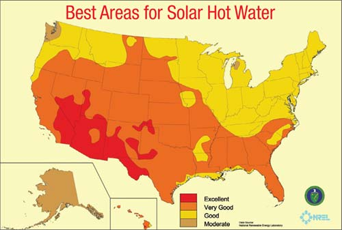
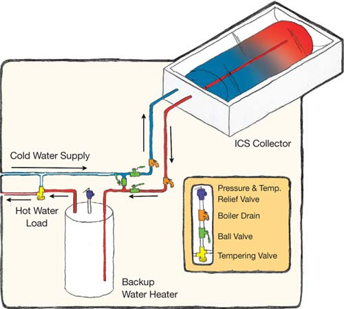
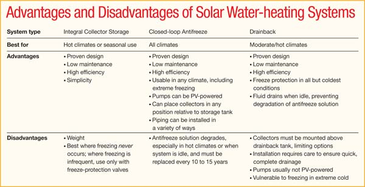
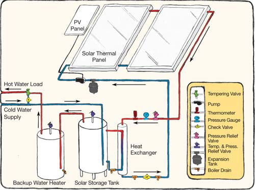
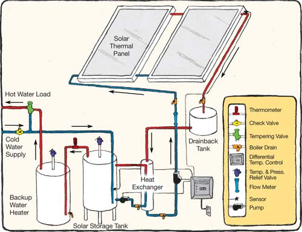

How would you like to have free hot water for the next 40 years? That should sound pretty good - about 15 percent to 20 percent of a typical household’s energy outlay goes to make sure the “H” tap means what it says. If energy prices increase by 6 percent annually, the average family would save thousands of dollars over the coming decades by installing a solar water-heating system that supplies just 65 percent of their hot water.
I mean “free” literally. Yes, you’ll spend money up front to install the heating system, but your home equity will increase instantly, often enough to offset the cost of installation. You’ll also pay reduced utility bills - saving more money every time rates rise. Within a few years, you’ll recover the initial expense. Experts agree, a solar water heater is far and away the easiest initial investment in renewable energy. Perhaps best of all, you’ll enjoy hot baths or showers with the satisfaction of knowing the energy comes directly from the sun.
Solar water heaters vary in their details, but they all do the same basic things: gather heat in a solar collector; transfer the heat, directly or indirectly, to the water supply; and store the heated water until it’s used. They use relatively simple, time-tested technology, which is one reason they are a best bet in renewable energy.
It’s important to understand that solar water-heating systems have very low - sometimes zero - operating costs, and maintenance amounts to only about $2 per month. Say you might spend $7,000 to install a solar water heater, when you could install a conventional gas or electric heater for considerably less. But it’s so much less expensive to operate the solar heater that, at some point, you’ll make up the initial difference. When all costs for purchase, installation, maintenance and operation are taken into account, a solar water heater usually equals an electric heater after just eight and a half years, and equals a gas heater in just less than 15 years. From then on, through the expected 40-year life of the solar system, you’ve got free hot water (see “Gas vs. Solar: Compare Costs,” in the Image Gallery).
Consider the positive environmental benefits of a solar water heater, and the deal just gets better. A typical residential solar water heater will offset greenhouse gas emissions by about 1,500 pounds of carbon dioxide (CO2) per year. That’s equal to the amount of CO2 released by an average vehicle every 1,685 miles (based on 19.6 pounds of CO2 per gallon at 22 mpg).
It’s cheaper to conserve energy than to purchase it, so the first thing you’ll want to do is reduce your hot water needs to the minimum. Start by reducing waste; then minimize consumption. Reducing your usage ensures that your solar heating system will provide the maximum possible portion of your hot water. Even if you don’t go solar, using the minimum necessary hot water is good for your wallet and good for the environment.
The next step is to choose a solar water heater to supplement your fossil-fueled heater. Here are the first things you need to consider about a solar water heater:
Siting. Solar collectors must be in full or nearly full sunlight all year, so have a solar professional assess your site to find the best location for the collector. The optimum collector mounting angle, measured from horizontal, equals the latitude of the collector location. Ideal direction is true south, but in most cases, solar collectors for water heating can be mounted within 30 degrees of true south and will tolerate a small amount of shading.
Collectors are typically mounted on roofs, but also can be mounted on the ground near homes. Wind can create strong lift under collectors, so they must be securely fastened to the building or to the ground. They’re not heavy, even when filled with fluid, but make sure the roof structure is in good shape.
Sizing. Solar water heaters are rarely designed to provide 100 percent of your hot water - there are just too many cloudy days over the course of a year. Nevertheless, a typical solar water heater will provide between 50 percent and 75 percent of your annual load. In hot climates or during the sunniest times of the year, you can expect to get nearly 100 percent of your hot water from solar. During the cloudiest periods you may only get 50 percent, depending on your climate.
In cool climates, a system is sized with 20 square feet of collector and 20 gallons of storage capacity for each person in the household. For large families, this can be reduced by 10 percent for each person over four members in the household. In warm climates, a system is sized with 15 square feet of collector and 25 gallons of storage for each person in the household, with the same reductions for larger families. These sizing methods will give the best return on investment. Systems smaller than these certainly will work well, but your savings will be less.
The choice of the right type of solar water-heating system depends primarily on the climate where you live. The crucial fact is that if a water-filled pipe is exposed to freezing conditions, the water inside the pipe will freeze and the pipe will burst. In any climate that experiences freezing temperatures, some precautions must be taken to prevent pipes from freezing.
In climates that never experience freezing conditions, or for systems that operate only in summer, such as those for summer homes and campgrounds, water in the solar collector and piping presents no such threat. The best type of solar water heater for these applications is an integral collector storage (ICS) system, often called a batch heater. ICS systems are simply water tanks exposed to the sun. Commercial ICS collectors have one or multiple tanks inside an insulated box with glass on one side. The glass side is set facing the sun, and the tanks are painted black or have a special coating that absorbs the sun’s energy. This system has no pumps or controls and is plumbed directly into a home’s water system. It is the simplest, least expensive solar water heater and is popular in all areas surrounding the equator. ICS systems heat domestic water directly. Other systems heat the water indirectly, using a heat-transfer fluid that is kept separate from the water supply, because most water supplies contain dissolved minerals that will clog the small passages in other kinds of solar collectors.
In areas that experience freezing conditions, two kinds of solar water-heating systems are appropriate, closed-loop antifreeze systems and drainback systems.
Closed-loop antifreeze systems are the most popular and versatile type of system installed worldwide. They consist of one or more collectors, insulated piping, a circulating pump, an expansion tank, a hot-water storage tank, a heat exchanger, solar fluid (usually a solution of water and nontoxic propylene glycol antifreeze), a controller, and some valves and gauges. The piping loops from the collectors to the heat exchanger and back again. This closed loop is filled with the antifreeze solution, which stays inside the collectors and piping at all times. Whenever the sun shines on the collectors, the circulating pump comes on, and the solar fluid circulates within the closed loop. The fluid gets hot inside the collectors and travels through the piping to the heat exchanger. The heat exchanger transfers the heat from the fluid to the water inside the storage tank, which stores the heated water for your use. As the fluid heats, it expands, so the expansion tank is included to relieve pressure in the system. When the sun is not shining, the circulating pump simply turns off, and the fluid stops circulating.
The circulating pump in these systems can be powered by either AC or DC current. If AC-powered, the pump gets its energy from your home’s 120-volt electrical power system. In this case, a controller is necessary to turn the pump on and off at the appropriate times. The controller is connected to temperature sensors in the collectors and on the storage tank. Whenever it’s hotter in the collectors than it is in the storage tank, the controller turns on the pump. When it’s warmer in the storage tank than in the collectors, the controller turns the pump off.
If the circulating pump is DC-powered, it’s wired directly to a small photovoltaic (PV) panel mounted outside. Whenever the sun shines on the PV panel, electricity flows to the circulating pump, and it starts running. When the sun stops shining, the pump turns off. DC-powered systems are becoming the most popular kind of closed-loop antifreeze system on the market. The PV supplies free power to the pump; the pump runs whenever the sun is out, preventing stagnation and overheating; and it runs at variable speeds depending on the amount of sunlight, so it automatically matches the collector’s heat output. These pumps have limited power, but it’s sufficient to move the fluid through a piping system that’s always full. The absence of a pump controller, the component most prone to failure, makes PV-powered systems quite reliable.
Drainback systems are popular in moderate and hot climates. They’re similar to closed-loop antifreeze systems, but the big difference is that they include an additional tank, the drainback tank. When the system is off, the fluid is stored in the drainback tank and the pipes and collectors are empty. The fluid can be pure water or a weak solution of antifreeze in water. These fluids don’t resist freezing as well as those used in closed-loop antifreeze systems, which makes drainback systems vulnerable to freezing in extreme or extended cold.
Drainback systems usually use a controller and an AC pump. The pump is a special high-head pump because it has to lift the fluid to fill the piping and collectors every time the system turns on. This requires more power than in antifreeze systems, where the pump just circulates fluid through piping that’s always full. Otherwise, drainback systems operate similarly to an antifreeze system: When the sun warms the collectors, the high-head pump comes on and circulates the fluid into and throughout the system, and a heat exchanger transfers the heat from the fluid into the storage tank. There is no expansion tank and fewer valves and gauges than in an antifreeze system, but the piping must be carefully installed to facilitate proper drainage.
A few other factors will influence your choice of a solar water heater. If you find a system that is substantially cheaper than others, there’s probably a reason, such as lower quality components. There is no substitute for quality - don’t take shortcuts with an investment like this.
A solar water-heating system often can be expanded to include space heating as well. The collector array and other components will need to be larger. There are numerous options for storing and distributing heat in combination systems. Discuss your ideas with a solar professional (see Solar Sources, below).
Closed-loop and drainback systems should always have a separate storage tank for solar-heated water and a backup water heater. The same tank can’t do both jobs efficiently. Typically, the output of the storage tank runs to the input of the backup heater. When solar output is sufficient, the backup heater doesn’t come on.
There are two popular kinds of solar collectors, flat-plate and evacuated-tube. Flat-plate collectors are by far the most popular kind of collector and work well in all climates. They have been around the longest and are efficient and competitively priced. They are shallow rectangular boxes with glazed tops and insulated backs and sides. An absorber plate inside gathers solar heat and transfers it to a network of copper tubing, through which the solar fluid flows. They are the only collector that sheds snow and frost well. They also operate precisely within the temperature range needed to heat domestic water - below zero to about 180 degrees - and rarely overheat.
Evacuated-tube collectors from different manufacturers vary significantly, but all use rows of glass tubes, each containing a heat absorber. A vacuum sealed inside the tubes insulates the absorbers. These collectors overheat more readily than flat-plate collectors, so care must be taken never to oversize the collector array or undersize the storage tank. They tend to cost more than flat-plate collectors for equivalent heating capacity, but prices for high-quality evacuated-tube collectors are falling. They also are more fragile than flat-plate collectors and don’t shed snow or frost well. On the other hand, they work well when there is a consistent year-round, daily load on the system. In addition, they’re less susceptible to the forces of wind, because there are spaces between the tubes, unlike the large closed surface of a flat-plate collector.
Solar water heaters can last 40 years or more if the design is appropriate to the climate and the system incorporates high-quality materials and workmanship. Investing in a solar energy system could even be considered patriotic, because solar keeps our energy dollars at home and reduces our dependency on others. You will spend a certain amount of money to heat water in any case, so why not choose to do it with solar energy? Your pocketbook, and the environment, will appreciate it.
|
 JOHN IVANKO The author's Wisconsin straw bale home incorporates both a solar water-heating system (upper roof) and a photovoltaic solar-electric system. |
 CROMWELL & RAMSEY ENVIRONMENTAL With proper design and careful installation, a solar water-heating system can provide a large percentage of a home’s hot water for many years with little maintenance. |
 NREL Most of the United States receives sufficient solar energy for water heating, with potential ranging from excellent (deep orange) to moderate (tan). |
|
 BENJAMIN NUSZ Best for warm climates or seasonal use, integrated collector storage (ICS) systems are the simplest solar water heaters. |
 BENJAMIN NUSZ Ideal for all climates, closed-loop antifreeze systems use heat exchangers to transfer heat from the antifreeze mixture to the water, which remains in the storage tank until used. |
 BENJAMIN NUSZ Best suited to moderate/hot climates, drainback systems include a tank that holds the antifreeze solution when the system is off. |
|
 |
 |
|